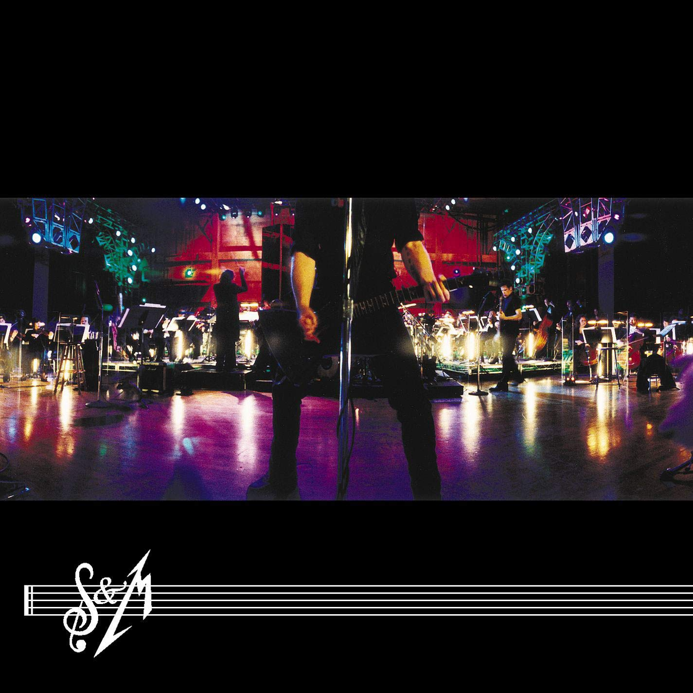

Todo lo que debes saber sobre este género musical.

Un poco de historia...
El heavy metal, o simplemente metal (pronunciado como métal) — en español traducido literalmente
como «metal pesado»—, es un género musical que nació a finales de los años sesenta
y
principios de los
setenta en el Reino Unido y también en los Estados Unidos, cuyos orígenes provienen del
blues
rock, hard
rock y del rock psicodélico. Se caracteriza principalmente por sus guitarras fuertes y
distorsionadas,
ritmos enfáticos, los sonidos del bajo y la batería son más densos de lo habitual y la voz es
generalmente aguda o gutural.
Hasta el día de hoy no existe un consenso preciso que defina cuál fue la primera banda de heavy
metal,
algunos mencionan a Led Zeppelin y Deep Purple, mientras que otros dejan ese
sitial exclusivamente a
Black Sabbath.
Por aquel mismo tiempo, a finales de los años 1960 y principios de los años 1970,
surgieron muchas bandas que si bien no tuvieron el impacto mediático de las mencionadas
anteriormente,
también fueron de gran aporte al nacimiento del género como
Blue Cheer,
Blue Öyster Cult,
Sir Lord Baltimore,
Budgie,
UFOy
Wishbone Ash;
posteriormente surgieron agrupaciones como
Scorpions,
Rainbow,
Judas Priest(estos últimos introdujeron la
combinación del doble bombo con ritmos rápidos en
semicorchea de bajo y guitarra, y eliminaron las últimas influencias del blues) y
Motörhead (quienes
incluyeron algunos elementos del punk rock, dándole un nuevo énfasis a la agresividad y velocidad).
En la segunda mitad de los setenta y en pleno auge del
Punk surgió la Nueva ola del heavy metal
británico
(abreviada comúnmente como
NWOBHM)
liderada por
Iron Maiden,
Saxon y
Def Leppard y de la que
formaron parte los muy influyentes ex post
Venom, que dio un nuevo valor al género
derivando en el
nacimiento de una posterior subcultura a ambos lados del Atlántico (influyendo la NWOBHM
notablemente en el
surgimiento de nuevas bandas estadounidenses como
Manowar,
Savatage o
Queensrÿche a finales de esa
década).
Con la llegada de los ochenta...
Comenzaron a aparecer los primeros subgéneros del metal; por un lado
el glam metal (encabezado por bandas como
Europe,
Bon Jovi,
Van Halen,
Whitesnake o
Mötley Crüe) que lideró las
ventas y las listas musicales de los principales mercados y por el otro el
metal extremo que provenía de la escena underground.
De este último surgió con una amplia popularidad el
Trash Metal liderado por los llamados "Big
Four" estadounidenses (
Metallica,
Megadeth,
Slayer y
Anthrax) y con una importante repercusión en
Alemania (surgiendo bandas como
Kreator o
Sodom).
Etimología
Hasta el día de hoy el origen exacto de por qué se usa el término heavy metal en el ámbito musical
es
desconocido. Lo que sí es cierto es que durante varios siglos dicha frase se empleó
en la química y en
la metalurgia, y hace alusión a algunos elementos químicos que poseen ciertas características en
común
(metal pesado). Uno de los primeros usos en la cultura popular ocurrió en 1961,
cuando el escritor
estadounidense William Burroughs creó
el personaje Uranian Willy: The Heavy Metal Kid en su novela The
Soft Machine. En su siguiente obra Nova Express de 1964, Burroughs volvió a desarrollar el término
para identificar a una raza de alienígenas de Urano y también a un tipo de música que escuchaba una
segunda raza; la gente insecto.
Según el historiador de música Ian Christe su definición provendría del lenguaje hippie; heavy sería un
sinónimo de potente o profundo y metal describiría un estado de ánimo como la pesadez. En ese
sentido
la palabra heavy haría referencia a las bandas que tocaban con una amplificación mayor a lo que
interpretaba la música popular de mediados de los sesenta. En cuanto a su contexto musical las
primeras
referencias al heavy metal sería el álbum debut de Iron Butterfly llamado precisamente
Heavy, y su
primer uso en las líricas de una canción sería en «Born to Be Wild» de los
estadounidenses
Steppenwolf publicado en junio de 1968.
Por otro lado, el primer documento escrito que utilizó el término para identificar a un tipo de
música
rock apareció en una revisión de la revista Rolling Stone, cuyo autor fue
Barry Gifford. Dicha
revisión
se escribió el 11 de mayo de 1968 y trató sobre el disco A Long Time Comin' de la
banda The Electric
Flag donde Gifford comentó: «Nadie que haya escuchado a Mike Bloomfield —como cantante o
instrumentista—
en los últimos años esperó algo como esto. Esta es una nueva música soul, la síntesis del white
soul
y
el rock heavy metal».